UM OLHAR SOBRE O ATLÂNTICO
Galeria da costa .
Da primeira onda ao próximo horizonte. Descobre a costa portuguesa em fotografias.
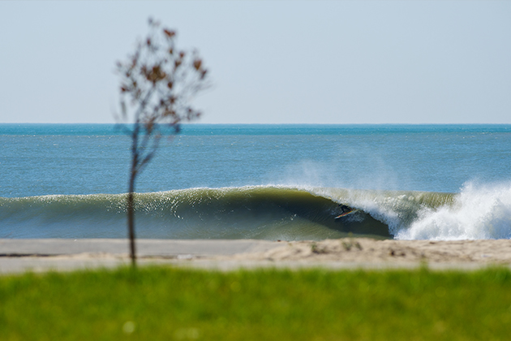
Espinho
Ondas e paisagens da costa portuguesa.
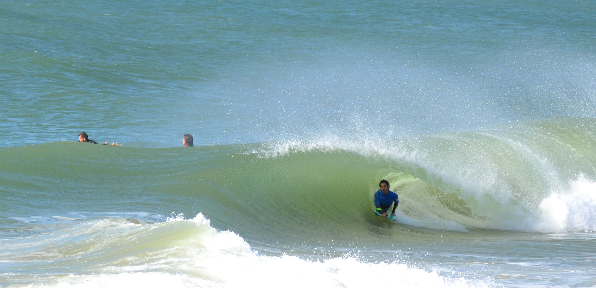
Faro
Ondas e paisagens da costa portuguesa.
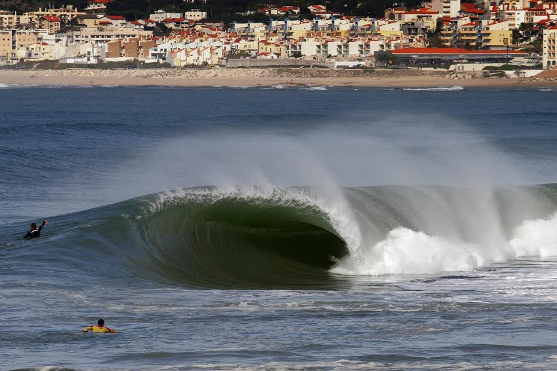
Figueira da Foz
Ondas e paisagens da costa portuguesa.
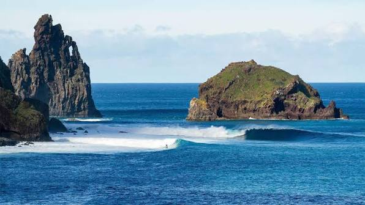
Funchal
Ondas e paisagens da costa portuguesa.
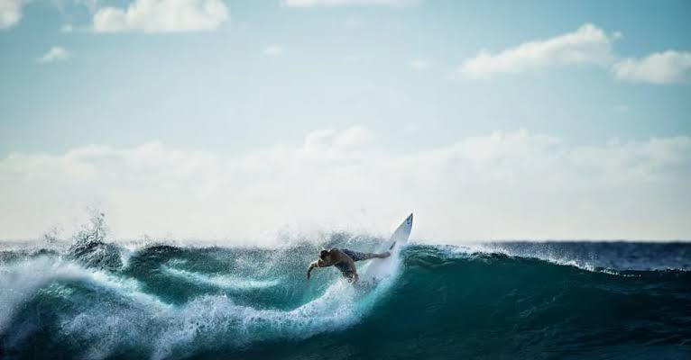
Horta
Ondas e paisagens da costa portuguesa.
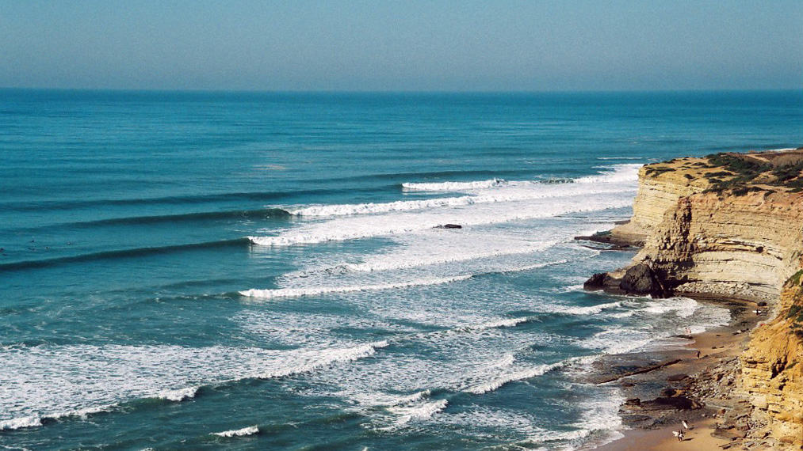
Lisboa
Ondas e paisagens da costa portuguesa.
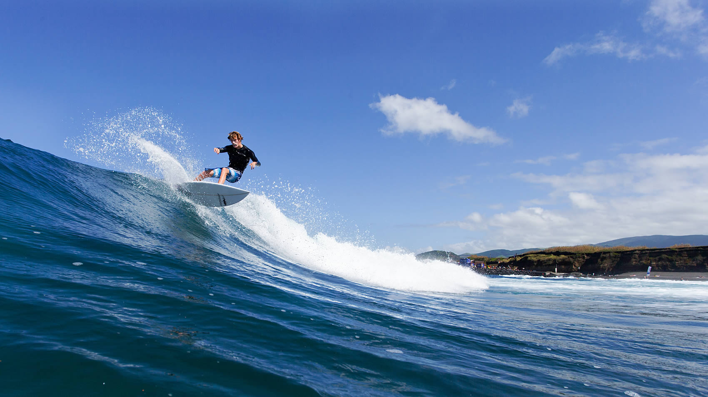
Ponta Delgada
Ondas e paisagens da costa portuguesa.
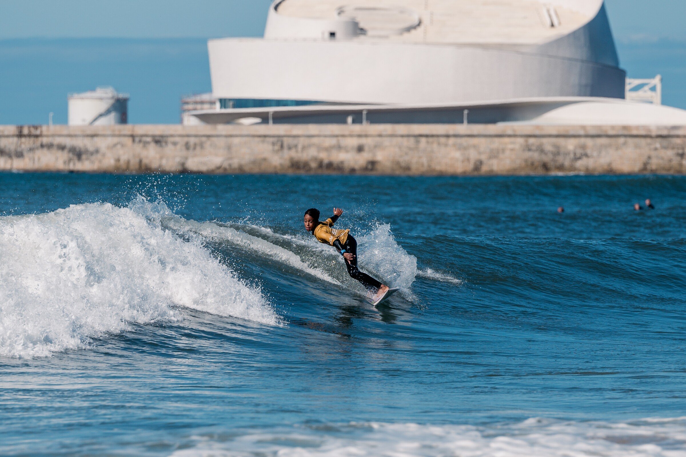
Porto
Ondas e paisagens da costa portuguesa.
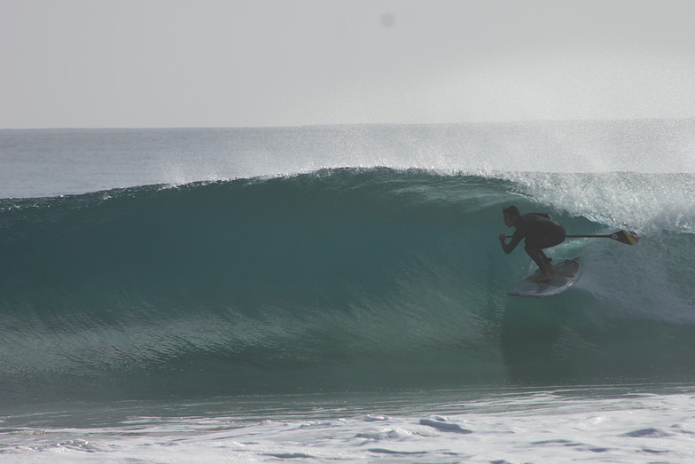
Porto Santo
Ondas e paisagens da costa portuguesa.
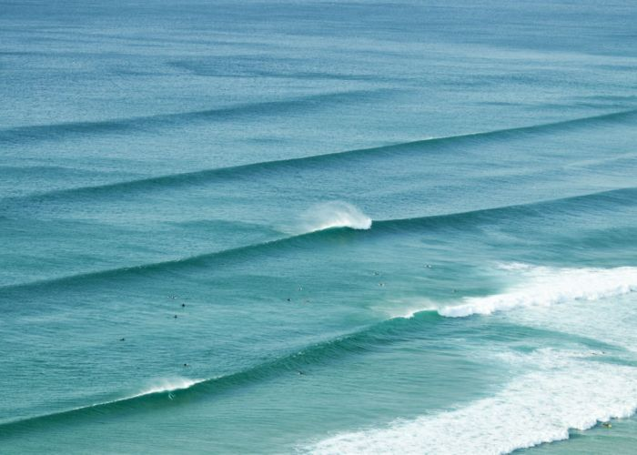
Sagres
Ondas e paisagens da costa portuguesa.
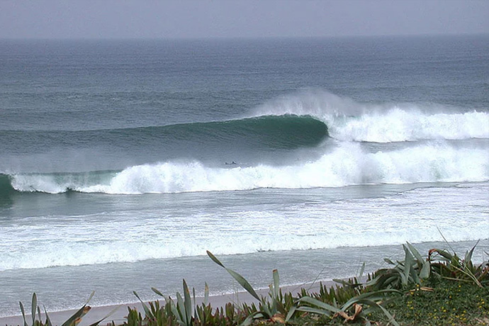
Santa Cruz das Flores
Ondas e paisagens da costa portuguesa.
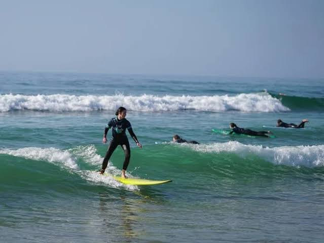
Sines
Ondas e paisagens da costa portuguesa.
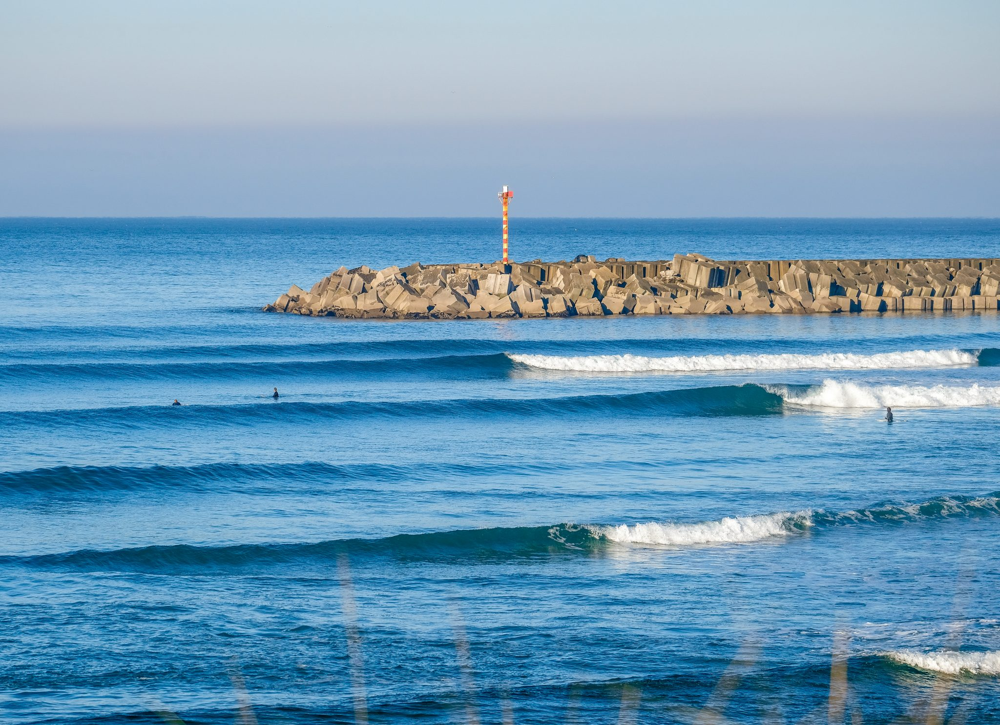
Viana do Castelo
Ondas e paisagens da costa portuguesa.
1 / 13 · Espinho
ANTES DE ENTRAR NA ÁGUA